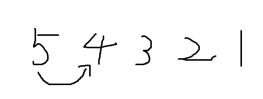
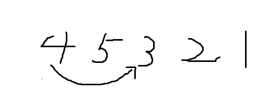
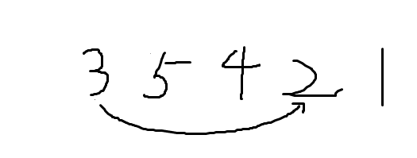
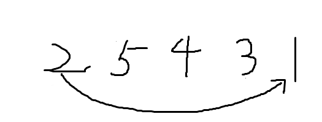
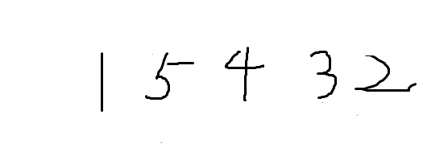

选择排序
概述
选择排序(selection sort)的排序方式非常直观，很简单。先假设第一个位置的值为最大(小)值，与剩余为排序的值进行比较，并且将小的值存放到首位。然后，将剩余未排序的值按照同样的方法排序，直到排完所有的值。

简单举例
假设一个数组 [5, 4, 3, 2, 1]  首先假设数组的第一个数为最大值，然后将它与后面的进行比较，5>4因此两个数交换  然后与下一个只进行比较，4>3因此交换  以此类推，最终有一个数落到它应该所在的位置，也就是1   至此，1就已经排序完成，然后进行下一轮未排序的值排序。 这个时候未排序的第一个数值变成了数组的第二个数，因此从第二数开始排序，这里就不画图了。
总结
可以看出，选择排序分为两个过程，也就是两个循环进行。 首先是比较的轮数，也就外层循环，一共需要比较N-2轮。 然后每轮需要比较的次数减1。
程序示例(C语言)
int selection_sort(int array[], int length)
{
int temp = 0; //用于交换数据
for(int i = 0; i < length-1; i++)
//i的值最大length-2，比如上面的例子，只需要循环4次
{
for(int j = i+1; j < length; j++)
//j每轮次数都会-1
{
if(array[i] > array[j])
//升序排序
{
temp = array[i];
array[i] = array[j];
array[j] = temp;
}
}
}
return 0;
}
本人水平有限，若文章中存在错误请各位指正，谢谢